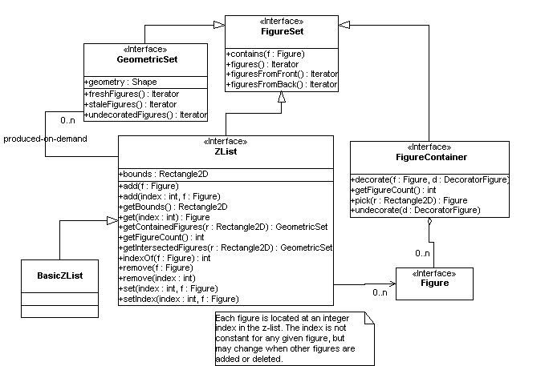

Figure sets and containers
The Diva canvas has a number of interfaces related to collections of figures. FigureSet, the root interface, defines methods to test for containment, and to return the contained figures. There are three version of this last method: figuresFromFront() orders the figures from front (that is, the top of the display list) to the back; figuresFromBack() orders them from back to front; and figures() orders them however is fastest. (Generally, testing for hits proceeds from front to back, while redraw proceeds from back to front.)
A GeometricSet is an interface for sets of figures that have their members defined by a geometry -- that is, a Shape object -- in some way. The methods freshFigures() and staleFigures() are optional; but if defined, they are expected to return the figures added to the set by the most recent change to the geometry, and the figures removed from the set respectively. This is used by interactive applications. Note that the getFigureCount() method does not appear in this interface, to allow implementors to use lazy evaluation to produce the elements of the set.
A ZList is the data structure in which large collections of figures are stored. The interface is designed to allow an implementation to use an efficient spatial data structure internally. Currently, the only implementation is a naive list-based one, but eventually we hope to provide an efficient implementation based on b-trees or quad-trees.
A FigureContainer is the interface implemented by classes that can be set as the parent of a Figure. In the Diva canvas, this interface is implemented by FigureLayer and AbstractFigureContainer (and its subclasses, including CompositeFigure and TransformedFigureContainer).
The pick() method returns the top-most descendent that intersects the passed rectangle. Implementors can use the utility method CanvasUtilities.pick() to do the work. decorate() and undecorate() are required to enable DecoratorFigure objects to be inserted into the figure tree -- see the section on decorators for more detail.